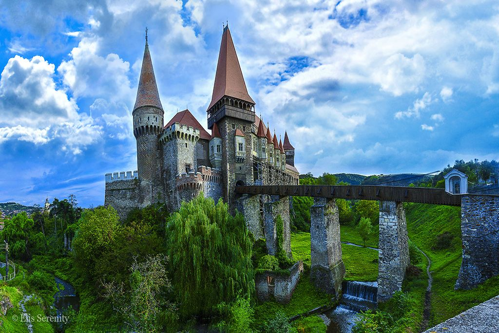
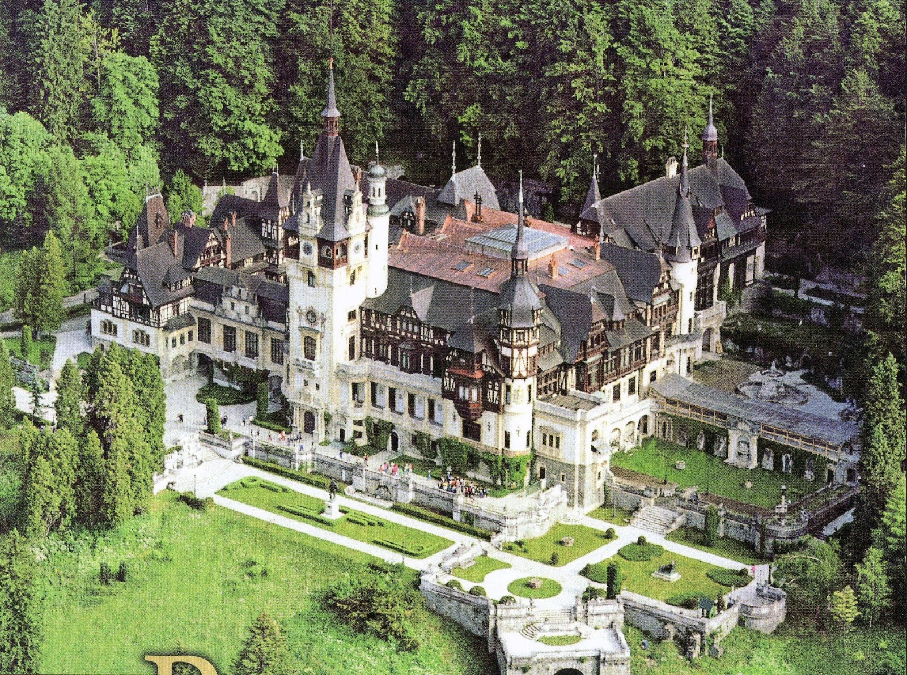
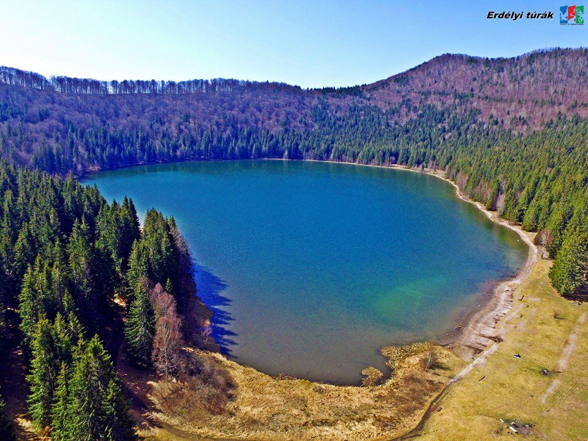
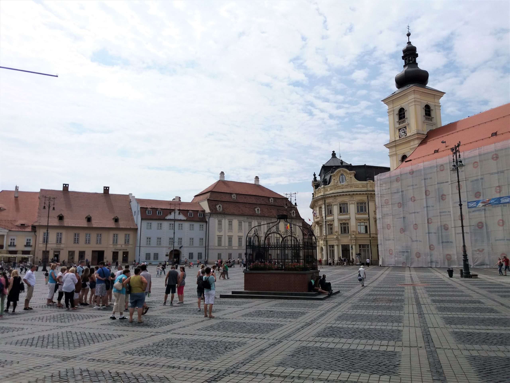

A határtalanul pályázat programjai:
Első nap
Az első napon az iskola előtt indultunk el a kora reggeli órákban. Első megállónk az egykori erdélyi alvajdák székhelye, Déva vára volt.
Ezután egy másik várat látogattunk meg: Vajdahunyad várát. Érdekessége hogy Szilágyi Erzsébet, Mátyás édesanyja építette a Mátyás-loggiát, ami az első fennmaradt reneszánsz építmény Erdélyben.
A kora esti órákban megérkeztünk a szállásra, Tusnádfürdőre.
Második nap
Az első város amit érintettünk, az erdélyi szászok egykori központja Brassó volt, ahol megnéztük a Fekete templomot, a Tanács házat és a Katalin kaput. Továbbutaztunk Szinajára. I. Károly román királynak itt volt a nyári rezidenciája, a Peles Kastély. Ezekután visszautaztunk a szállásra, Tusnádfürdőre.
Harmadik nap
Következő úti célunk egy kráter tó, vagyis a Szent Anna-tó, majd a Mohos tőzegláp volt. Utóbbiban sétálva húsevő növényeket is láthattunk.
Felsétáltunk a Torja Büdös-barlangba, ami egy szabadon látogatható mofetta.
Végül Kézdivásárhelyet tekintettük meg. Az esti órákban visszaérkeztünk a szállásra.
Negyedik nap
Ezen a napon az első megállónk egy mesés helyen, Kisbaconban volt, ahol Benedek Elek, vagyis ahogy a gyerekek ismerték "Elek apó" birtokával és meséivel ismerkedtünk meg. Megnéztük a vízimalmot és sütöttünk kürtöskalácsot is. Baróton megtekintettük a Római Katolikus Templomot.

Diáktalálkozót tartottunk 16 órakkor a Berde Áron iskola tanulóival Sepsiszentgyörgyön. Rövid bemutatkozást követően összemértük tudásunkat egy barátságos focimeccs keretében. Ezt követően visszautaztunk a szállásunkra, Tusnádfürdőre.
Ötödik nap
Az utolsó napon Sepsiszentgyörgyön megtekintettük a középkori eredetű református templomot, majd továbbutaztunk, hogy felfedezhessük a kerci apátságot.
Délután az erdélyi szászok kulturális és kereskedelmi központjába, Nagyszebenbe érkeztünk, ahol az Óvárosban megtekintettük az evangélikus székesegyházat.
Végül hazautaztunk Szegedre, ahova az esti órákban érkeztünk meg a busszal az iskola elé.